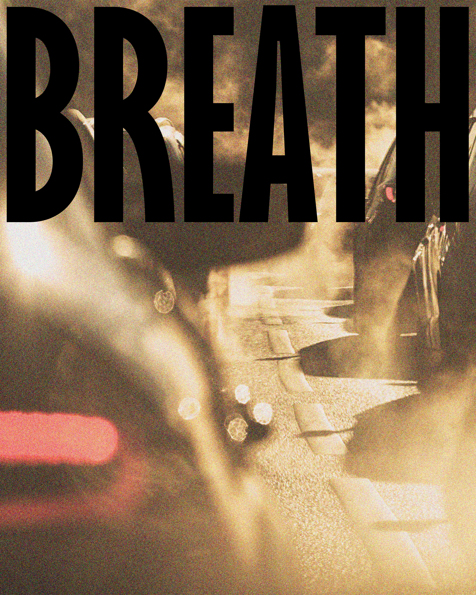
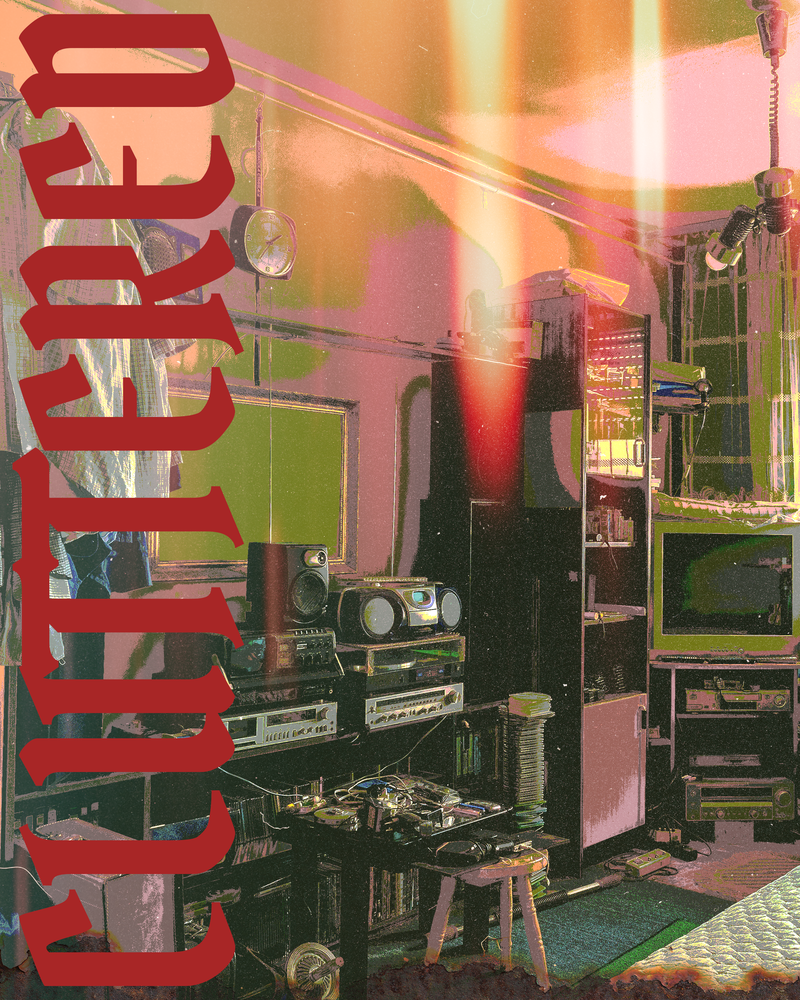
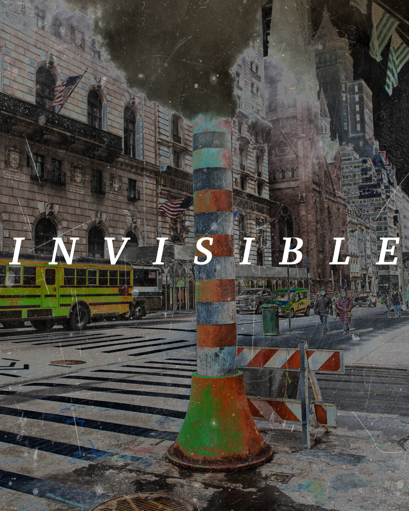
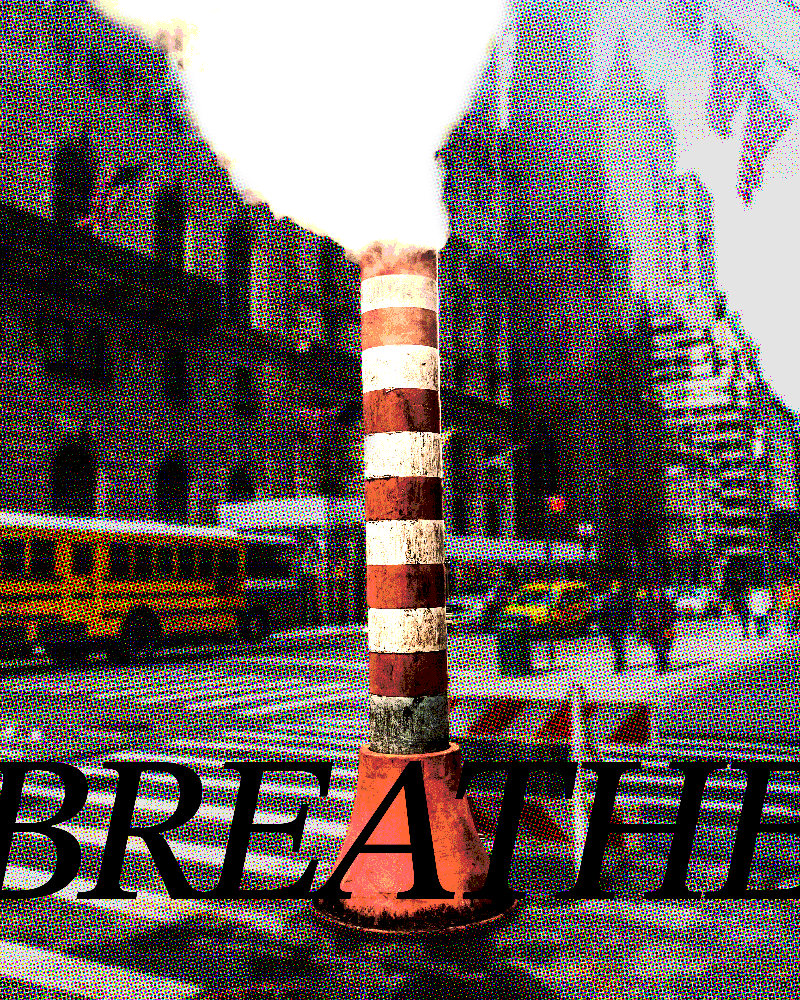

A concept-driven awareness campaign designed to translate a broad sustainability message into a more memorable and visually compelling brand story for a student creative project.

Breath — a tight, close-up crop where the wordmark becomes the skyline, pressing down on a blurred street below.

Cluttered — a cramped, over-stuffed room in a hot, oversaturated palette; the blackletter type runs the length of the frame like a shelf label.Caged — a dense crowd blurred into anonymity, each face indistinct from the next; the serif type sits low and still, like a plaque no one looks down to read.

Invisible — grain and scratches age the photograph, while the spaced serif type reads almost like an engraved plaque: pollution made to look historic, and therefore easy to ignore.

Final poster — the halftone chimney and wordmark are pulled together into the finished piece, condensed into one image that reads clearly at a glance.